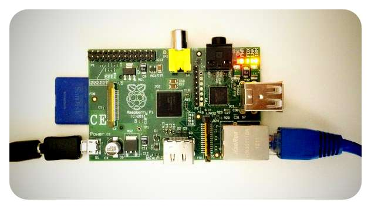

What is My Pi Server?
This is it! My little website, running on a little Raspberry Pi sitting on my desk

Why create a website?
Well the main reason for creating this, was to see if a Raspberry Pi really could be used as a home web server. I'd seen blogs and videos on the internet of other people doing this, but I still wondered if a cheap, tiny computer could actually work. I also wanted to learn a bit of html/css coding. So I thought this little project would be a good opportunity to produce something.